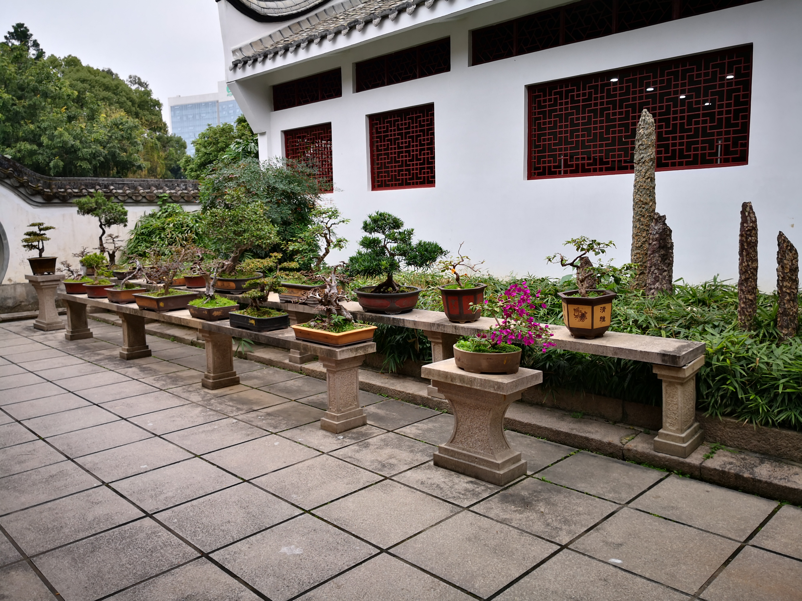

福州西湖公园位于福州市区中心区域，至今有1700多年的历史，是福州保留最完整的一座古典园林。有苏州园林的别样风格，兔耳岭怪石奇观，是福州市民休闲最佳去处。福州西湖为晋太康三年（公元282年）郡守严高所凿，在唐末就已经是游览胜地；五代时，福州西湖成为闽王王审知次子王延钧的御花园；到宋代更富盛景；清道光八年（公元1828年）林则徐为湖岸砌石，重新修建；1914年辟为西湖公园。

福州西湖公园至今有1700多年的历史，是福州保留最完整的一座古典园林，被人称为“福建园林明珠”，名列全国36个西湖前茅。现占地面积为42.51公顷，其中陆地面积12.21公顷，水面面积30.3公顷。
据史载，晋太康三年（公元282年），郡守严高筑子城时凿西湖，引西北诸山之水注此，以灌溉农田，因其地在晋代城垣之西，故称西湖。五代时，闽王王审知扩建城池，将西湖与南湖连接。其子延钧称帝，在湖滨辟池建水晶宫（在今水关闸附近），造亭、台、楼、榭，在王府与西湖之间又挖设一条复道，便于携后宫游西湖。西湖成了闽王朝的御花园。此后渐成了游览区。宋淳熙年间（1174—1189年），南宋宗室、福州知州兼福建抚使赵汝愚又在湖上建澄澜阁，并品题“福州西湖八景”：仙桥柳色、大梦松声、古堞斜阳、水晶初月、荷亭唱晚、西禅晓钟、湖心春雨、澄澜曙莺。

历代文人墨客对西湖美景赞叹不止，多留有佳篇。宋词人辛弃疾《贺新郎·三山雨中游西湖》词中赞曰：“烟雨偏宜晴更好，约略西施未嫁”。明谢肇淛《西湖晚泛》赞：“十里柳如丝，湖光晚更奇”。民国3年（1914年）福建巡按使许世英辟西湖为公园，当时面积仅3.62公顷。解放后，西湖公园几经扩大。集福州古典园林造园风格，利用自然山水形胜，并以乡土树种配置为主，讲究诗情画意，“小中见大”，使西湖景色愈见秀丽，遐迩闻名。修复及新增的景点有仙桥柳色、紫薇厅、开化寺、宛在堂、更衣亭、“西湖美”、诗廊、水榭亭廊、鉴湖亭、湖天竞渡、湖心春雨、金鳞小苑、古堞斜阳、芳沁园、荷亭、桂斋、浚湖纪念碑、盆景园等。
2009年新增大梦山景区。大梦山景观工程占地5.2公顷，其中原福州动物园景观改造3.7公顷，湖头街及岸边绿地景观改造1.5公顷。
这次改造恢复的明朝时期古建筑梦山阁、西湖社、西湖书院，当中还要点缀小亭、细水、睡莲、林中小道等古典园林要素。还从西湖抽水到平章池，水流过平章溪到墨池，再经过雄兵桥，回到西湖。如此一来，整个小水系更将蜿蜒围绕着西湖书院和西湖社，衬托出古典园林的神韵来。
友情链接：百度百科